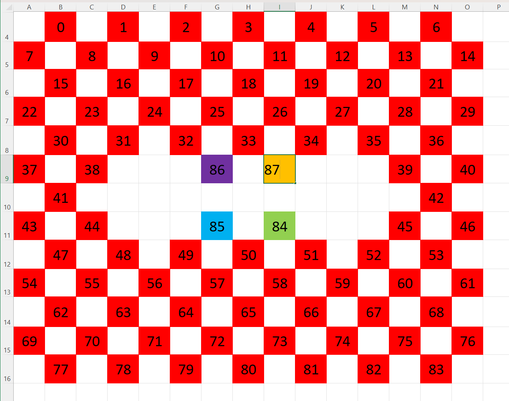

Станция 2¶
Розничное имя — Яндекс Станция 2 (флагман 2-го поколения). SoC — Amlogic AXG, как у Лайта. Ядро 4.9, но это старшая модель линейки: вдвое больше ОЗУ (~490 МБ), 512 МБ NAND, сенсорная панель, Wi-Fi Marvell и USB-C PD.
Внутреннее имя Midi принадлежит Станции 2
В device-tree эта модель называется yandex,station-midi (model
«Yandex Station Midi», hostname …gen2). Это не розничная
«Станция Миди» — та имеет кодовое имя Cucumber на SoC A5.
Внутреннее имя Midi принадлежит розничной Станции 2, а розничная
«Станция Миди» — это Cucumber. Ориентируйтесь на SoC и ОЗУ, а не на слово Midi.
Не путайте её со Станцией Макс, у которой Android-идентификатор
ro.product.device=yandexstation_2 (другое устройство, Android 9).
Платформа в двух словах¶
| Что | Значение |
|---|---|
| SoC | Amlogic AXG (amlogic, axg) |
| CPU | 4× Cortex-A53 (0xd03), до 1.2 ГГц |
| ОЗУ | ~490 МБ (MemTotal 501664 kB) — вдвое больше минислушателей |
| Флеш | NAND Micron 512 МБ SLC (ID 0x2c 0xdc, page 4096, erase 256 КБ), UBI |
| Ядро | Linux 4.9.68 aarch64 (сборка 20261013) |
| Userspace | Buildroot 2020.02.1 |
| АЦП | TLV320ADC3101 (TI) — опорный сигнал усилителя, не микрофоны (см. Звук) |
| Усилитель | SY6045S (как у Мини 2) |
| Индикация | LED-дисплей через Gowin (gowin_led_device) — FPGA/CPLD-контроллер |
| Сенсор касания | midi_touch |
| Питание | USB-C Power Delivery (husb238_pd) |
| Датчик света | LTR-308 (0-0x53) |
| Радио | Marvell/NXP (mlan + moal), BT через hci_uart |
| quasar | 3.21 (0.369.1.46.4778263334.20261013) |
Что работает¶
| Что | Состояние | Где описано |
|---|---|---|
| Root и SSH | работает | подмена DNS |
| USB Host (OTG) | работает | USB Host |
| AirPlay | работает | AirPlay 2 одним набором |
| Spotify Connect | работает | Spotify Connect |
| YouTube Music | частично (голосом не проверялось) | YouTube Music |
| Плеер как Bluetooth-источник | не проверялось | — |
| Свои звуки | не проверялось | — |
| Обработанный микрофон | не проверялось | — |
| Подсветка | работает | Индикация |
| YAM | не проверялось | — |
| Своя LLM | работает | Quasar Bridge |
Получение root¶
Основной способ — подмена DNS: сброс с зажатой кнопкой отключения микрофона или центральной сенсорной кнопкой при включении питания, затем подмена DNS на роутере. После получения root — настройка SSH и отключение обновлений.
Чем отличается¶
- Другой Wi-Fi: Marvell/NXP (
mlan+moal) — на Лайте/Мини 2 Unisoc, на Мини 1 Broadcom. BT — черезhci_uart. - Больше ресурсов: ~490 МБ ОЗУ и 512 МБ NAND Micron (у минислушателей — 256 МБ Toshiba).
- LED-дисплей на Gowin (
gowin_led_device) — отдельный FPGA/CPLD-контроллер индикации (у Станции 2 — текстово-пиксельная «шторка»), а не прямые светодиоды sysfs (каталог/sys/class/ledsпуст). - Сенсорная панель (
midi_touch). - USB-C PD (
husb238) и отдельный аудио-АЦП TLV320ADC3101: он даёт опорный сигнал усилителя, а микрофоны идут через PDM — см. Звук.
Разделы флеша¶
mtd0 "bootloader" 4 MB mtd1 "tpl" 6 MB mtd2 "boot" 20 MB
mtd3 "system" 176 MB -> ubi0:rootfs (ubifs, RO)
mtd4 "nv" 1 MB -> /tee (vfat, RO)
mtd5 "bkupgrade" 233 MB -> ubi1 (RW) = /bkupgrade
mtd6 "recovery" 60 MB
NAND — Micron 512 МБ SLC, page 4096, OOB 128, erase 256 КБ. Разделы заметно крупнее, чем у минислушателей.
Шина I2C и периферия¶
| Шина:адрес | Чип | Назначение |
|---|---|---|
0-0x08 |
HUSB238 (husb238_pd) | USB-C Power Delivery |
0-0x53 |
LTR-308 | датчик освещённости |
0-0x51/0x54/0x55, 1-0x50 |
24C02 | EEPROM |
1-0x18 |
TLV320ADC3101 | аудио-АЦП, опорный сигнал усилителя (см. Звук) |
1-0x2a |
SY6045S | Class-D усилитель |
Индикация¶
Под светорассеивающей поверхностью — панель из 88 светодиодов. Ей управляет отдельный
контроллер Gowin FPGA/CPLD (gowin_led_device) по SPI, а из Linux она видна как обычный
framebuffer:
| Параметр | Значение |
|---|---|
| Устройство | /dev/fb0 (YNDX LED screen) |
| Разрешение | 89×1 (логическое) |
| Формат | 32 bpp, 4 байта на пиксель |
| Размер кадра | 356 байт |
| Светодиоды | 88, индексы 0–87 (88 не загорается) |
Хотя разрешение логическое 89×1, светодиоды стоят в шахматном порядке, и каждый пиксель
кадра — один светодиод. Карта индексов составлена экспериментально:

Красные ячейки — основная панель (0–83), цветные — четыре центральных светодиода (84–87),
белые — пустые места.
Прямое управление¶
Кадр — 356 байт в /dev/fb0, светодиод index — байты с index * 4 по index * 4 + 3.
Вся панель на небольшой яркости:
Порядок каналов в пикселе — R, G, B, W, по байту на канал (0x00–0xFF).
Анимации панели .led содержат по строке на кадр: цвета светодиодов RRGGBBWW через пробел,
в конце указана длительность кадра. Общий формат описан на
странице Лайт.
- Рассеиватель сглаживает соседние светодиоды: крупные символы и силуэты читаются лучше мелких деталей.
- Прошивка перерисовывает панель во время работы Алисы и может затереть ваш кадр.
- Штатные анимации — файлы
.led: в каталоге/system/vendor/quasar/ledpatterns/panel/для основной панели (0–83), в/system/vendor/quasar/ledpatterns/oknix/для четырёх центральных светодиодов логотипа (84–87).
Звук¶
- ALSA card0
AML-AUGESOUND:TDM-B-sy6045s-hifi(усилитель),TDM-C-tlv320adc3101-adc(АЦП),PDM(микрофоны).
| Устройство | Что это | Кто держит |
|---|---|---|
hw:0,0, воспроизведение |
усилитель; 48 кГц, S16, период 960, буфер 7680 | dmix_spk, медиа-демон Алисы (maind --mediad) |
hw:0,1, захват |
TLV320ADC3101, 2 канала | arecord … /dev/null из /etc/init.d/S40adc |
hw:0,2, захват |
PDM-dummy, 16 каналов, 48 кГц: микрофоны и опорный сигнал |
maind --platformd |
S40adcчитаетhw:0,1в/dev/nullтолько для того, чтобы с АЦП пошли данные: по комментарию в скрипте они затем появляются в каналах 8 и 9hw:0,2, а/etc/asound.confсобирает изhw:0,2семь каналов (hw_feedback_and_mics). Отдельного входа с микрофонами нет: всё идёт черезhw:0,2, который монопольно держитplatformd.- Громкость Алисы — регулятор
Master Playback Volume(моно, 0–255):set_volume.sh→amixer set Master N%. Системныйsoftvol(pcm.soft_volumeв/etc/asound.conf) создаёт его без шкалы в дБ.
Вход¶
gpio-keys(/dev/input/event0) — физические кнопки.midi_touch(/dev/input/event1) — сенсорная панель. Оба устройства читаетmaind --platformd.- Кнопка Алисы —
EV_KEYс кодом 582 (KEY_VOICECOMMAND) наevent1. Удержание дольше ~1,5 с —Starting conversation, Алиса слушает. Короткое нажатие —Toggle play/pause; если ни один плеер не активен,maindна это просит у Алисы музыку. - Нажатие имитируется записью
struct input_eventв/dev/input/event1. busybox 32-битный, поэтому событие — 16 байт: время (8), тип (2), код (2), значение (4). На модели с 64-битным userspace то же событие занимает 24 байта — пример для Мини 3 Про на её странице:
Z='\0\0\0\0\0\0\0\0'; SYN="$Z\0\0\0\0\0\0\0\0"
printf "$Z\001\000\106\002\001\000\000\000$SYN" > /dev/input/event1 # нажата
usleep 1700000 # удержание
printf "$Z\001\000\106\002\000\000\000\000$SYN" > /dev/input/event1 # отпущена
USB-host (OTG)¶
Порт Type-C по умолчанию отдан gadget-контроллеру: dwc_otg (ff400000.dwc2_a) держит
USB2-порт 1, а xhci-hcd.0.auto стартует без порта и умирает при загрузке:
xhci-hcd xhci-hcd.0.auto: xHCI host not responding to stop endpoint command.
xhci-hcd xhci-hcd.0.auto: Assuming host is dying, halting host.
xhci-hcd xhci-hcd.0.auto: HC died; cleaning up
Переключение — те же регистры, что у Лайт (PHY ffe09000, раскладка
как в Amlogic phy-aml-new-usb3.c, set_mode()):
| Адрес | Регистр | До | После | Смысл |
|---|---|---|---|---|
0xffe09084 |
usb_r1 |
0x01000000 |
0x01000000 |
у Лайт здесь 0x01002000; на Станции 2 порт уже включён |
0xffe09080 |
usb_r0 |
0x8000006A |
0x0000006A |
u2d_act = 0: порт → xHCI |
0xffe09090 |
usb_r4 |
0x00000002 |
0x00000000 |
p21_SLEEPM0 = 0 |
0xffe09020 |
u2p_r0 |
0x10252000 |
0x00252060 |
подтяжки 15 кОм на D+/D- (роль хоста) |
Порядок: unbind ff400000.dwc2_a → unbind xhci-hcd.0.auto → четыре devmem →
bind xhci-hcd.0.auto. dwc3 не отвязывать — будет oops в dwc3_remove.
Проверено на живом устройстве (YNDX-00051, прошивка от 21.10.2026):
- хаб Genesys
05e3:0610плюс вложенный WCH1a86:8091— определяются на 480 Мбит/с; - флешка 8,18 ГБ (
/dev/sdb, FAT32, монтируется) и SD-карта 7,4 ГБ в картридере05e3:0751(/dev/sda) — читаются; - USB-Ethernet Realtek RTL8153 (
0bda:8153) — послеr8152появляетсяeth0; - модули из
contrib/modules(sd_mod,usb-storage,uas,mii,usbnet,r8152) загружаются без единой ошибки ядра;snd-usb-audioна этой модели не проверялся.
Отличия от рецепта для Лайт:
- картридер не сообщает о вставке карты.
/dev/sdaостаётся нулевого размера, пока устройство не переподключить:echo 1-1.2.1 > /sys/bus/usb/drivers/usb/unbind, пауза,echo 1-1.2.1 > /sys/bus/usb/drivers/usb/bind. Пересчётscsi_host/*/scanпомогает только на старте; на раннем старте каталога ещё нет и glob подставляется буквально; - после переключения USB-gadget (ADB, режим прошивки) недоступен до перезагрузки.
Установка та же, что на Лайт: contrib/otg/install.sh распознаёт обе модели
(yandex,station-micro и yandex,station-midi). Пошаговая инструкция, скрипты и защита
от бутлупа — в рецепте USB Host (OTG).
Алиса: фразы вызова и локальный канал¶
- Фразы вызова —
/system/vendor/quasar/spotter_models/activation/:alisa,yandexиyasmina. Каждая — отдельная нейросеть на одно слово (spotter-type chen14, вwords.txtдва класса:fillerи само слово), поэтому своё слово вызова текстом не задать. Формат моделей и режим своего слова в движке — в голосовом тракте. - Короткие команды без обращения («громче», «пауза», «дальше» —
spotter_models/command) включены, только пока играет собственный плеер Алисы. Иначе колонка их слышит, но вmaind.logпишетPhrase … is disabled in commandPhrasesConfig. - Локальный канал
127.0.0.1:9875: кадр — 4 байта длины и protobuf, поле253 = 3— состояние Алисы, поле252— вложенное сообщение (формат — у derangedabbot). Поле1вложенного сообщения — статус:0— свободна,1— слушает,3— фраза распознана, текст в поле2. Номера сверены сonAliceStateChangedвmaind.log; статус0protobuf не передаёт — поля просто нет.
Обновления¶
Цепочка OTA на этой модели:
maind --updatesdскачивает образ и вызывает/system/vendor/quasar/device_ota_update.sh;- тот вызывает
/usr/bin/apply_packed_ota: образ переезжает в/bkupgrade/ota/yandex_io_ota.swu, ставитсяfw_setenv boot_to_recovery 1, перезагрузка; - загрузчик (
yandex_io_check_recovery) уходит в recovery, а тот прошивает образ.
onboot.sh при каждой загрузке чистит /bkupgrade/ota/* и /bkupgrade/update_*.
yandex-noupdate.sh закрывает первые два звена. Чтобы закрыть и
третье, заглушают apply_packed_ota и следят, чтобы boot_to_recovery оставался 0
(fw_printenv -n boot_to_recovery).
Что ещё проверить¶
- Протокол Gowin LED по SPI, порядок цветовых каналов и назначение индекса 88; подробности — в разделе Индикация.
- Marvell/NXP Wi-Fi (
mlan/moal) — чип и возможности (monitor/AP). - Карта регистров TLV320ADC3101 (опорный сигнал усилителя).
- USB-C PD-профили (
husb238).
Данные для этой страницы собрал @sharazhniy — спасибо за вклад.